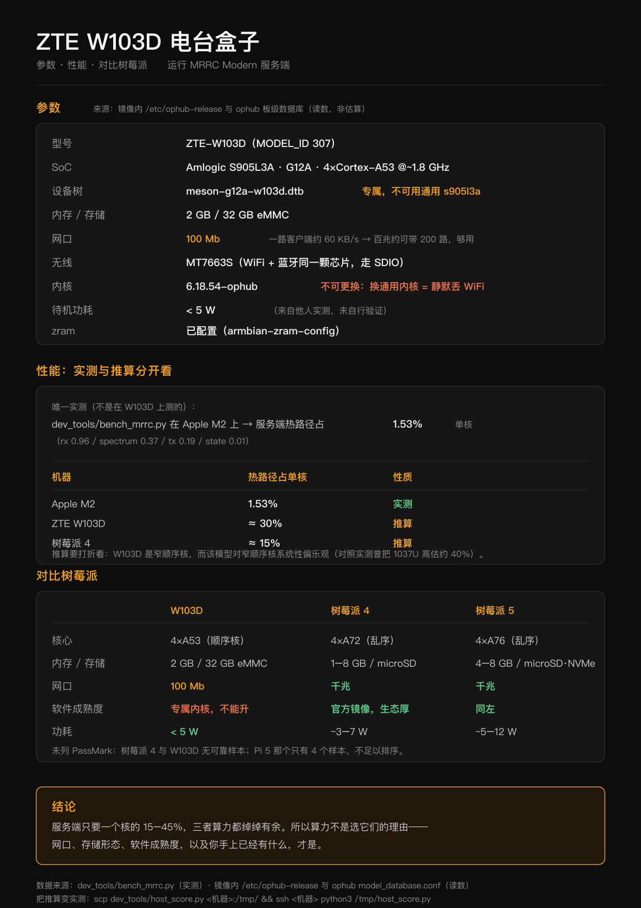

W103D 盒子完整指南：从开箱到 MRRC 干活
面向手里刚拿到一台 W103D、什么都没做过的人。全程分两大段：先把系统刷进去（§1–§8）， 再把 MRRC 配到能用（§9–§16）。最后一节是一张打勾清单。
速查版（已熟悉流程时看）：packaging/box/README.md要自己出镜像才看：docs/w103d_pack.md
三条前置说明，先说清楚：
再决定要不要固化进 eMMC（§17）。
而且每台盒子的口令都不一样。
不一致。我把三种手段都写了，按你的机器试。
- 走 U 盘路线：Android 的分区与数据不动（只写一次 u-boot 环境，见 §5）。刷坏了拔掉 U 盘重新上电就回到原厂安卓。等全部验收通过，
- 镜像里没有任何密钥。 Web 口令、自签证书都在盒子首启时现生成——所以公开下载这份镜像是安全的，
- §5（让盒子从 U 盘启动）是最容易卡住的一步，因为那一段在原厂安卓里操作，各家固件的菜单路径
---
1. 先认清你的盒子
| 项 | 必须是 |
|---|---|
| 型号 | ZTE W103D（中兴云电脑 / 电视盒子） |
| 芯片 | Amlogic S905L3A（G12A 家族，4×Cortex-A53） |
| 内存/存储 | 2 GB / 32 GB eMMC |
| 网口 | 100M 有线（够用：一路客户端约 60 KB/s） |
| 无线 | MT7663S（能用，但实时音频优先走有线） |
⚠️ 认准芯片。国科 GK6323、RK3566 的同名/同形盒子不适用——那份镜像的内核补丁与 WiFi 固件 是专门烘给 S905L3A-w103d 的。
芯片叫法对照（别被卖家说晕）
| 你在哪看到 | 名字 |
|---|---|
| 卖家 / 线刷包 / 论坛 | 晶晨 S905X2 |
| ophub 板级库 / 本文档 | s905l3a |
| 设备树 / 平台 | meson-g12a（G12A 家族） |
三个说的是同一颗芯片的家族：S905L3A 属于 G12A，市面俗称 S905X2，ophub 钉的是具体变体名。 所以卖家说"S905X2"、而本文档说"S905L3A"，不矛盾 ✅
同族的几个兄弟型号（固件通刷）
中兴云电脑 W100D / W102D / W103D / W105D ← 论坛实测：这几款固件通刷| W100D（太极） | W105D（玲珑） | W103D（本指南） | W102D | |
|---|---|---|---|---|
| 芯片 | 晶晨 S905X2 | 晶晨 S905X2 | 晶晨 S905X2（=s905l3a） | 同类 |
| 内存 / 存储 | 2 G + 8 G | 2 G + 8 G | 2 G + 32 G | — |
| 系统 | 安卓 9 | 安卓 9 | 安卓 9 | 安卓 9 |
（W100D 与 W105D 的公开配置完全一样，差别在形态与命名：W100D 属"太极"、W105D 属"玲珑"名片式。）
"通刷"说明硬件几乎同源 ✅ 但存储差 4 倍（8 G vs 32 G）——本镜像装完约占 3 GB、载荷仅 145 MiB， 8 G 型号够用 ✅
关于无线网卡：论坛资料没有一款写明（四款都没写）。但"固件通刷"是一条支持性证据 —— 一份线刷包能同时驱动四款的 WiFi，说明它们多半是同一颗或兼容网卡 ✅（这是推断，不是确证 ⚠️）。 真要买之前，以实物为准：getprop 或拆机看丝印。
⚠️ 但有一处本指南无法替你确认：W105D/W100D 用的是不是同一颗 MT7663S 无线网卡（论坛资料没写）。 本镜像最难的部分正是 MT7663S 的驱动适配，这块不一样的话，WiFi 就要重新适配。 另外 ophub 的板级库里只有 W103D（s905l3a-w103d），没有 W105D 的条目——同族不等于配置可直接复用。
盒子上的口要认一遍（拍照存着，接线时省事）：
- 网口、HDMI、电源
- USB 口 ≥ 2：一个插 U 盘（走 U 盘路线时），一个给电台
- 复位孔（AV 孔里那个小按钮）——§5 的兜底手段要用
2. 准备清单
- W103D 盒子 + 原装电源
- ≥8 GB U 盘（会被完全擦除）
- 网线（必须——首启要联网）
- 电台 USB 线。FT-710 要插盒子/电台的上方
Enhanced口（不是 Standard 口） - 电脑（烧盘用）
- 原厂线刷固件包（兜底；走 U 盘路线时用不到，但建议先下载好放在手边）
3. 下载镜像并校验
mkdir -p ~/w103d && cd ~/w103d
curl -LO https://www.vlsc.net/mrrc_modern/downloads/MRRC-Modern-1.25.5-w103d.img.gz校验（这一步别跳——1.19 GB 下坏了是能下坏的）：
# macOS
shasum -a 256 MRRC-Modern-1.25.5-w103d.img.gz
# Linux
sha256sum MRRC-Modern-1.25.5-w103d.img.gz| 字节数 | 1,280,233,862 |
| SHA-256 | 81cf1f9e2bfa9f13e596b764fe89150aff728a9744edf6fac65f45927a2a6ee5 |
两者都对不上就别往下走。先确认字节数（ls -l）——大小不对说明下载被截断了。
4. 烧到 U 盘
认准盘符，别烧错盘。（这一步会把目标盘整个擦掉。）
macOS：
diskutil list # 找到你的 U 盘，记下 /dev/diskN（N 是数字）
diskutil unmountDisk /dev/diskN
gzip -dc MRRC-Modern-1.25.5-w103d.img.gz | sudo dd of=/dev/rdiskN bs=4m
sync # 等它真的写完⚠️ 用 /dev/rdiskN（裸设备）不是 /dev/diskN——后者慢十倍以上。
Windows：用 Rufus 或 balenaEtcher，选那个 .img.gz（两者都能直接吃 gz）。 目标是"从镜像写入"模式，不是解压后复制文件。
Linux：
lsblk # 找盘
gzip -dc MRRC-Modern-1.25.5-w103d.img.gz | sudo dd of=/dev/sdX bs=4M status=progress conv=fsync烧完把 U 盘安全弹出（macOS：diskutil eject /dev/diskN）。系统可能提示"此磁盘无法读取"—— 那是正常的，镜像是 Linux 分区，Windows/macOS 读不懂。
5. 让盒子从 U 盘启动（新机器最容易卡的一步）
原理：已从镜像里核实，不是猜的
原厂安卓的 u-boot 有一个 update 模式。进去以后它会到 U 盘上找并运行 aml_autoscript——这个脚本就在镜像的启动分区里，内容是：
setenv bootcmd 'run start_autoscript; run storeboot'
setenv start_autoscript '... SD 卡 → USB(0..3) → eMMC ...'
setenv upgrade_step 2
saveenv # 写入 u-boot 环境
reboot它做的就是把启动顺序改成「先 U 盘/SD、再 eMMC」，存进 u-boot 环境，然后重启。 重启后 u-boot 从 U 盘加载 s905_autoscript → 读 uEnv.txt（里面写着本板的 FDT=/dtb/amlogic/meson-g12a-w103d.dtb）→ 引导 Linux 内核。
所以整件事的关键只有一条：让原厂 u-boot 进 update 模式。
⚠️ 更正一处说法
之前写「eMMC 一个字节不动」不准确——上面的 saveenv 确实会写 eMMC（写的是 u-boot 环境变量， 不是 Android 的分区数据）。
准确的说法：不碰 Android 的分区与数据，只改 u-boot 的启动顺序偏好。 回滚依然简单（见下）。
三种触发方式（按独立性排）
① 复位孔（最不依赖原厂软件，第一次建议用它）
- 断电，U 盘插好
- 用回形针按住复位孔里的按钮
- 通电，按住约 10 秒再松手
② adb（原厂安卓里打开了 USB/ADB 调试）
adb connect <盒子IP>:5555
adb shell reboot update③ 盒子上的终端 App
su -c 'reboot update'reboot update 就是让安卓把 u-boot 的 upgrade_step 置位——u-boot 下次启动看到它就运行 U 盘上的 aml_autoscript ✅
成功的样子
HDMI 上是 Linux 内核日志（不再有安卓开机动画）。因为 uEnv.txt 里配的控制台是 console=ttyAML0,115200n8 console=tty0——串口和 HDMI 都能看，所以刷机失败时接上 HDMI 就能看到卡在哪 ✅
第一次开机要几分钟：扩 rootfs、生成 SSH 密钥。
回滚：断电 → 拔 U 盘 → 上电。u-boot 在 U 盘上找不到脚本，走 eMMC → 回安卓。 （u-boot 环境里那条“优先 U 盘”的偏好还在，但没有 U 盘时它是无害的。）
6. 首启会自动完成什么
镜像里已经烘好了不需要硬件的全部东西（用户、代码、venv、依赖、frpc、FTDI 库、11 份机型配置、systemd 单元）。 首启只做必须碰硬件的四件事：
| 首启做 | 为什么不能提前做 |
|---|---|
| 生成 Web 登录口令 | 每台机器应当不同；写死在镜像里等于公开口令 |
| 生成自签证书 | 证书要绑定本机名/IP，且私钥不该随镜像分发 |
探测串口（/dev/ttyUSB / ttyACM） | 端口号只有在真机上插了电台才知道 |
| 探测声卡（电台的 USB 声卡） | 同上 |
首启不需要联网：上面四件事全在本机完成（生成口令、自签证书、探测串口与声卡）， 不下载任何东西。开机后 mrrc-firstboot.service 跑完会把自己标记成"已做"，之后不再重复。
既没有网线、也没有能连上的已保存 Wi-Fi 时，mrrc-setup-ap.service 会另外开一个 开放热点让你进去配置 —— 见 §9.6。它按网络状态判断，不按"是否首次开机"： 盒子一旦有了可用网络，热点就不存在了，那个免口令页面也随它一起消失。
7. 进系统，第一件事改口令
从路由器 DHCP 列表里找到盒子的 IP，然后：
ssh root@<盒子IP> # 出厂口令 1234（ophub Armbian 的默认值）进去第一件事就改掉它：
passwd root⚠️ 出厂 root/1234 是公开知识，不改等于把盒子送人。
8. 拿到 Web 口令，打开界面
mrrc-show-password这个命令必须用 root 跑——口令存在一个 0640 root:root 的文件里。
首启时 HDMI 控制台的横幅上也会印一次；之后想不起来就用这个命令取回。
浏览器打开：
https://<盒子IP>:8888自签证书会警告一次 → 高级 → 继续前往。
⚠️ 必须走 HTTPS，不要关。 手机浏览器要调用麦克风发射（PTT），而在 HTTP 下浏览器不给麦克风权限—— 这是浏览器安全策略，不是我们的设置问题。
登录后你应该看到主界面：频率、模式、S 表、瀑布图。这时候还没有电台——下一步接上。
9. 接网络（有线 / Wi-Fi）
刷完盘开机，盒子自己发一个开放热点，手机连上就能完成初始化 —— 这条已经实现了， 见 §9.6。只有一台手机也能把整个盒子配完。 下面另外三条路仍然可用，按你手边有什么选。
9.1 四条路，按你手边有什么选
| # | 你手边有 | 方式 | 现在能用吗 |
|---|---|---|---|
| 1 | 一根网线 | 直接插网线（最省事） | ✅ 能用 → §9.2 |
| 2 | 电脑 + 读卡器 | 预置：刷盘前把配置写进启动分区 | ✅ 能用 → §9.3 |
| 3 | HDMI + USB 键盘 | nmtui：盒子上的全屏文字界面 | ✅ 能用 → §9.4 |
| 4 | 只有一台手机 | 热点引导：盒子自己发热点 | ✅ 能用 → §9.6 |
⚠️ 一个限制：第 2 条（预置）只能写口令与电台设置，写不了 Wi-Fi 密码——Wi-Fi 归 NetworkManager 管，不走 env 文件（设计 D-4：两个域各有唯一写入者）。所以要连 Wi-Fi， 用第 4 条（一台手机，零键盘零网线）、第 3 条（有键盘）或第 1 条（有网线）。
9.2 第 1 条：网线（推荐）
插上就通，确认一下：
ip a # 看有没有拿到地址
nmcli device status # eth0 应显示 connected9.3 第 2 条：预置（刷盘时就写进去，零键盘零网线）
镜像的 FAT 启动分区会被挂到 /boot。往那儿放一个 mrrc.env，首启会自动采纳并改名成 mrrc.env.applied：
# 烧完盘、还没插进盒子之前（macOS 上那个 FAT 分区叫 BOOT，直接拖文件进去也行）
cat > /Volumes/BOOT/mrrc.env <<'EOF'
MRRC_WEB_PASSWORD=你自己定一个
MRRC_RADIO_MODEL=ft710
MRRC_PTT_MAX_TX_SECONDS=120
EOF支持任意 MRRC_* 键（就是 §13 那张表里的那些）✅
9.4 第 3 条：HDMI + nmtui（没有任何网络时最省事）
盒子接 HDMI + 一个 USB 键盘，登录 root / 1234，然后：
nmtui方向键选「启用连接 / Activate a connection」→ 选你的 SSID → 输密码。 这是全屏文字界面，既不需要网络也不需要图形环境 ✅
已经在 SSH 里（有网线）就用 nmcli：
nmcli device status # 先看 wlan0 在不在
nmcli device wifi list # 扫（要等几秒）
nmcli device wifi connect "你的SSID" password "你的密码"
nmcli connection show --active # 确认连上了
ip a show wlan0 # 拿到 IP 没盒子换了网络导致 IP 变了，就去路由器里重新找一下。
9.5 无线起不来时，按顺序查
每一条排除的东西都不一样，别跳步：
| 检查 | 命令 | 说明 | |
|---|---|---|---|
| 硬件在不在 | rfkill list | 显示 Soft blocked: yes → rfkill unblock wifi；看不到 wlan0 才往下查 | |
| 驱动加载没 | `lsmod \ | grep mt76` | 应有 mt7663s 与 mt76_sdio；没有就 modprobe mt7663s |
| 固件加载成功没 | `dmesg \ | grep -i mt76` | 有 firmware 失败字样 = 固件没加载上（本镜像带 4 个 mt7663 固件） |
| 网卡认出来没 | iw dev | 应列出 wlan0 | |
| 扫描有结果没 | nmcli device wifi list | 空列表 → 多半是天线或信道问题 | |
| 监管域 | iw reg get | 显示 country 00 时部分信道不可用；iw reg set CN 后重试 |
背景（决定你该查什么）：W103D 的无线是 MT7663S，WiFi 与蓝牙同一颗芯片，走 SDIO 而不是 USB。这块板的驱动是 ophub 专门适配的（上游 PR #3658 / #3659），所以 内核绝不能换——换通用内核 = 静默丢 WiFi（见 §19 红线③）。
能用，但实时音频优先有线：无线抖动大，长时间听音频容易卡。只是配置用，无线够。
9.6 第 4 条：热点引导（零键盘零网线，只要一台手机）
盒子上电后，如果既没有网线链路、也没有能连上的已保存 Wi-Fi，它会自己开一个 开放热点：
| Wi-Fi 名 | MRRC-Setup（MRRC_SETUP_AP_SSID 可改） |
| 密码 | 无（开放热点，故意的——你还没有办法被告知一个密钥） |
| 页面 | https://10.42.0.1:8888/setup |
| 窗口 | 30 分钟，用完自动关（MRRC_SETUP_AP_TIMEOUT_MIN 可改） |
操作步骤：
手机可能提示"该网络无互联网连接"——这是对的，选「保持连接」。
会先弹一次证书警告（盒子用的是自签证书）：选「高级 / 详细信息」→「继续访问」。 这一步绕不过去，也不该绕——它只出现在盒子自己开的那个热点上。
- 第 1 步：设置登录口令（至少 8 位）。必须先做：切网之后热点会关，这个免口令 页面也随之消失。此刻盒子里生效的口令是首启自动生成的随机值、你并不知道， 所以不先设成自己的就会被锁在盒子外面（服务端也会用 409 挡住"先切网"）。 - 第 2 步：扫描并选择你的 Wi-Fi，输入密码，点「连接并切换到这个 Wi-Fi」。
走 SDIO），AP 与 STA 不能同时存在（设计 D-3）。页面在断开之前就把后续步骤显示 出来了，照着做：把手机连回你自己的 Wi-Fi，然后在路由器后台的客户端列表里找到盒子， 用 https://它的IP:8888 打开控制界面，用刚设的口令登录。
- 盒子上电，等 约 15–30 秒，在手机 Wi-Fi 列表里找
MRRC-Setup并连上（无密码）。 - 浏览器打开
https://10.42.0.1:8888/setup。 - 页面上按顺序做两件事：
- 点下去之后手机会与盒子断开——盒子只有一颗射频（MT7663S，Wi-Fi 与蓝牙同一颗芯片，
如果 Wi-Fi 密码输错了：盒子会自动把热点重新开回来（设计上禁止静默失败，见 §6 数据流）， 手机重连 MRRC-Setup、刷新页面，就能看到失败原因并直接重试。一次失败还会重置那 30 分钟 窗口，所以多试几次不会把窗口耗光。
窗口用完了 / 错过了怎么办：断电重启。那个 30 分钟的闩是按开机次数算的，不写在 盘上——所以只要盒子还没有可用网络，每次上电都会重新给一次机会。（这是设计 D-6 的恢复路径； 把它做成持久状态就等于把盒子变砖。）
插上网线会怎样：热点立刻关闭，免口令页面随之失效。判据是网络状态而不是"是否配置 过"，所以一台配好的盒子永远不会再开热点。
有显示器的人可以完全不碰热点：mrrc-setup-ap 会把地址打到 HDMI 控制台上 （journalctl -u mrrc-setup-ap 里也有同一行）。这是设计对"开放热点期间被邻居抢先设口令" 那条残留风险的缓解手段——你不必依赖热点。
排查：
| 现象 | 查什么 | |
|---|---|---|
手机里看不到 MRRC-Setup | journalctl -u mrrc-setup-ap -n 50 --no-pager。有 could not start the setup hotspot ⇒ 看它后面那句 nmcli 的原因；rfkill list 显示软阻塞就 rfkill unblock wifi；再往下按 §9.5 的顺序查驱动与固件 | |
| 连上了热点但打不开页面 | `nmcli device show wlan0 \ | grep IP4（盒子应有 10.42.0.1/24）；command -v dnsmasq` —— 缺 dnsmasq 的话手机能连上热点但拿不到地址，任何地方都不报错，这是设计 D-2 专门点名的那个坑 |
打开的是 /login 而不是向导 | 免口令闸门没开。cat /run/mrrc/setup-ap/state.json 看 mode 是不是 hotspot、heartbeat 是不是最近 45 秒内的；再确认你确实是从热点网段访问的（不是从家里 Wi-Fi） | |
| 点"连接并切换"后一直转圈 | 这时手机应该已经掉线了，按页面说的连回你自己的 Wi-Fi。如果手机又自动连回了 MRRC-Setup，说明切换失败，刷新页面看红字原因 | |
| 切过去了但找不到盒子 IP | 路由器客户端列表里按主机名找；盒子自己也记了一行：`journalctl -u mrrc-setup-ap \ | grep joined` |
| 想改热点名 / 窗口时长 | 编辑 /opt/mrrc_modern/env/mrrc.env，加 MRRC_SETUP_AP_SSID=… 或 MRRC_SETUP_AP_TIMEOUT_MIN=…，然后 systemctl restart mrrc-setup-ap |
仍未在真机上验证的部分（设计 §10）：MT7663S 这颗 SDIO 变体能否真的起 AP 模式、 切换过程中手机端的重连体验、以及10.42.0.0/24与你家网络是否冲突。 上表第一行就是为第一条准备的——设计上不依赖它成立：真起不来的时候， HDMI +nmtui（§9.4）永远可用。
10. 接电台
FT-710 的线插口别搞错：用上方 Enhanced 口，它同时承载 CAT 串口和 FT4222 scope。 插 Standard 口的话 CAT 可能通但没有真频谱。
接好后确认三样东西都出现了：
ls -l /dev/ttyUSB* /dev/ttyACM* # CAT 串口
arecord -l # 电台的 USB 声卡（RX）
aplay -l # 播放设备（TX）⚠️ 这三样一样都不能少。少串口 = 没有 CAT 控制；少声卡 = 没有声音。
11. 选机型
mrrc-radio list # 11 个型号，带 ✅已验证 / ⚠实验性已验证的三个：ft710、ic7300、ic7300mk2。其余 8 个是实验性（默认只收不发，见下）。
mrrc-radio use ft710 # 自动探测串口 → 写配置 → 重启服务
mrrc-radio use ic7300 --port /dev/ttyACM0 # 或者你直接指定端口
mrrc-radio show # 核对当前生效的配置use 做了四件事：停服务 → 探测串口（真发包问电台）→ 写配置 → 起服务。 所以它需要电台是开机状态。
换机型时旧串口会被自动清掉。 FT-710 是ttyUSB0/1、IC-7300 是ttyACM0—— 留着上一个型号的串口等于配了一条没有报错的死链路。
关于 8 个实验性机型（重要）
ic705 ic7610 ic7760 ftdx10 ftdx101d ftdx101mp ftx1 ft891 —— 这些机型的指令表来自 Hamlib 与设备手册，不是真机实测。默认只收不发。
（在镜像里看得出来：这三个已验证机型的 profile 根本不写 MRRC_ALLOW_UNVERIFIED_TX 这一行， 而那 8 个都显式写着 =0——默认是安全的，要发射得主动改。）
理由（AD-019）：在没有实测过的频率/功率语义上发射，对电台和天线都不好。
要发射必须显式开门：
vi /opt/mrrc_modern/env/mrrc.env # 加一行 MRRC_ALLOW_UNVERIFIED_TX=1
systemctl restart mrrc-modern换回已验证机型时这个键会自动重置为 0，不会带着开着。
12. 验收：确认"真的能工作"
scp packaging/box/verify.sh root@<盒子IP>:/tmp/
ssh root@<盒子IP> 'bash /tmp/verify.sh'11 项，每项失败都会给出排查命令。先跑这个，再动手调别的。
| 项 | 查什么 |
|---|---|
| 1/11 | 有线网络（nmcli device status） |
| 2/11 | 电台串口（/dev/ttyUSB / ttyACM） |
| 3/11 | 电台 USB 声卡（arecord -l） |
| 4/11 | Python 与依赖 |
| 5/11 | 服务在跑 |
| 6/11 | 8888 上的 HTTPS 真的在应答（只看有没有应答，不看证书是否受信——自签证书本来就不受信） |
| 7/11 | 配置一致性（设计 D-11：EnvironmentFile 与 MRRC_CONFIG_FILE 同一文件） |
| 8/11 | Cloud Hub 隧道客户端（fleet/frpc） |
| 9/11 | Cloud Hub 公网入口（未接入时自动跳过） |
| 10/11 | PTT 安全上限（MRRC_PTT_MAX_TX_SECONDS 有值） |
| 11/11 | 初始化热点（mrrc-setup-ap.service 已装且已 enable、dnsmasq 在、守护进程活着） |
前 3 项就是硬件三件套。第 7 与第 10 项都是“没有报错也会出问题”的那类：第 7 项不合格时界面会显示 “已连接”而公网 TLS 校验失败；第 10 项没值时少一道防线①/② 中的第②道。
第 11 项不要求热点此刻是开着的——恰恰相反，一台已经有网络的盒子应该报 off （设计 D-6 围栏①）。它查的是"这套机器装上了、守护进程活着"，因为出问题的时刻你正好 连不上盒子、没法查。
然后实际用一次——打开界面，调频率、看瀑布、按 PTT 说一句。这才是真的验收。
13. MRRC 的全部可调项
配置文件：/opt/mrrc_modern/env/mrrc.env。改完 systemctl restart mrrc-modern 生效。
| 变量 | 作用 |
|---|---|
MRRC_WEB_PASSWORD | Web 登录口令（首启生成；想自己定就写这里） |
MRRC_LISTEN_PASSWORD | 收听专用口令：用它登录是只读访客（能听、能改频率/模式，不能发射、不能改设备设置）。留空=不启用 |
MRRC_WEB_PORT / MRRC_WEB_HOST | 监听端口（默认 8888）/ 绑定地址 |
MRRC_RADIO_MODEL | 当前机型（用 mrrc-radio use 改，别手改） |
MRRC_SERIAL_PORT / MRRC_BAUD_RATE | CAT 串口与波特率（同上，让 mrrc-radio 管） |
MRRC_ALLOW_UNVERIFIED_TX | 未验证机型的发射门禁（§11） |
MRRC_PTT_MAX_TX_SECONDS | 发射时长上限（镜像默认 120）——防线② |
MRRC_REMOTE_SESSION_TX_HEARTBEAT_S | 会话活性闸门；Cloud Hub 接入后自动写 5——防线① |
MRRC_SCOPE_PORT / MRRC_SCOPE_BAUD | FT-710 的 FT4222 scope 串口 |
MRRC_FTDI_LIB_DIR | FTDI 库目录（镜像里已预置 aarch64 版本） |
MRRC_AUDIO_RX_DEVICE / MRRC_AUDIO_TX_DEVICE | 指定音频设备（多声卡时有用） |
MRRC_RECORDINGS_DIR | 通联录音目录（服务端存 MP3） |
MRRC_RECORDINGS_MAX_SESSION_MIN / MRRC_RECORDINGS_BITRATE | 单次录音时长上限 / 码率 |
MRRC_ATR1000_HOST / MRRC_ATR1000_PORT | ATR-1000 天调的地址（§15） |
MRRC_SESSION_METRICS_INTERVAL_S | 会话遥测上报间隔（默认 300 秒，0=关） |
常用场景：
# 给朋友开一个"只能听"的入口
echo 'MRRC_LISTEN_PASSWORD=换个好记的' >> /opt/mrrc_modern/env/mrrc.env
systemctl restart mrrc-modern
# 之后访问 https://<盒子IP>:8888/listen 用这个口令登录
# 发射时长上限调长一点
sed -i 's/^MRRC_PTT_MAX_TX_SECONDS=.*/MRRC_PTT_MAX_TX_SECONDS=300/' /opt/mrrc_modern/env/mrrc.env
systemctl restart mrrc-modern14. 公网接入（Cloud Hub）
让盒子在公网可用（https://<呼号>.mrrc.vlsc.net/）。界面上 设置 → Cloud Hub：
- MRRC_SSL_CERT / MRRC_SSL_KEY（这个机型的入口证书） - MRRC_REMOTE_SESSION_TX_HEARTBEAT_S=5（防线①：PTT 半开时自动释放）
- apply：填呼号 + 联系方式，提交申请。
- 等批准。
- connect：自动完成——签证书、enroll、写隧道配置、起 frpc，并自动写两个配置键：
之后用 https://<呼号>.mrrc.vlsc.net/ 访问。
两条 PTT 防线互相独立，都要在：防线①＝会话活性闸门（公网必经），防线②＝时长上限（MRRC_PTT_MAX_TX_SECONDS）。 公网路径下 NAT 掉表、换 Wi-Fi、静默丢包都不会产生"断线"，只有这两条能兜住。
15. 天调 ATR-1000（可选）
盒子支持 ATR-1000 自动天调。配好地址就能用：
cat >> /opt/mrrc_modern/env/mrrc.env <<'EOF'
MRRC_ATR1000_HOST=<天调IP>
MRRC_ATR1000_PORT=<端口>
EOF
systemctl restart mrrc-modern配好之后：发射中驻波超阈值会自己发一次完整调谐（一次，不是反复试），调谐有效才写回学习库。 它绝不自行键控电台——触发前提是操作者自己在发射。
16. 日常运维
日志：
journalctl -u mrrc-modern -n 100 --no-pager # 服务日志
tail -f /opt/mrrc_modern/logs/server-stdout.log # 服务 stdout升级：
MRRC_UPDATE_SRC=<git url 或本地目录> mrrc-update只做三件事：拉代码 → 装依赖 → 重启。配置不会被碰。没有自动回滚——升级前先备份（下面）。
备份（升级前做）：
tar czf /root/w103d-backup-$(date +%F).tgz \
/opt/mrrc_modern/env/ /opt/mrrc_modern/mem_channels.json /var/lib/mrrc/（/opt/mrrc_modern/env/ 里有口令与 Cloud Hub 证书路径。这份备份含私钥，别乱放。）
手动装机内容检查：
bash /tmp/verify.sh # §12 那份，随时可重跑17. 写进 eMMC（可选，验收通过之后再做）
U 盘路线跑通、验收过了，才考虑固化。这一步会覆盖 eMMC。
armbian-ddbr # 先把原厂整盘备份出来（务必先做！）
armbian-install # 装进 eMMC（交互式菜单）armbian-install 的参数（摘自脚本自己的说明）：
| 参数 | 默认 | 说明 |
|---|---|---|
-m yes/no | no | 用主线 u-boot。本板保持默认 no —— ophub 给 W103D 指定了专属的 u-boot-w103d.bin |
-a yes/no | yes | 用 ampart 调整分区表（把 eMMC 让给 Armbian） |
-l yes/no | no | 先列出全部可用设备再选 |
板级身份（核过镜像里的 /etc/ophub-release 与 ophub 的 model_database.conf）： MODEL_ID=307、MODEL_NAME=ZTE-W103D、SOC=s905l3a、FDTFILE=meson-g12a-w103d.dtb、 启动器 u-boot-w103d.bin、BOARD=s905l3a-w103d。
之后盒子不再依赖 U 盘，32 GB eMMC 全用上。
⚠️ 变砖兜底：Amlogic 的 MaskROM 在 SoC BootROM 里（短接可重新进刷写模式）， 加上你手上的原厂线刷固件包，就能恢复。这两样在手，这一步的风险才是可控的。
18. 退回去
- U 盘路线：断电 → 拔 U 盘 → 上电 = 原厂安卓。零痕迹。
- 已写 eMMC：用原厂线刷固件包 + MaskROM 短接重刷。
19. 三条红线（会踩出"没有报错的故障"）
① 停服务只用 systemctl，不要 kill 进程。
Linux 上 frpc 的残留清理是 Windows-only 的。一个残留的 frpc 会占住 proxy 名，导致下次启动 隧道起不来而界面毫无提示。systemctl stop 会连带清掉 frpc，kill 不会。
② 登录限流是全局桶，误锁影响所有人。
经公网访问时所有登录共享同一个来源 IP，限流是 5 次失败 / 300 秒，而且全局。 不是你一个人被锁 5 分钟——是所有人。
③ 内核升级只走 armbian-update，保持 w103d 变体。
W103D 的 WiFi 完全依赖专属内核补丁 + MT7663S 固件 overlay。 换成通用内核 = 静默丢 WiFi：没有报错，只是连不上。
20. 排障
| 症状 | 先看 | 多半是 | |
|---|---|---|---|
| 打不开网页 | ip a；systemctl status mrrc-modern | 网线/服务；journalctl -u mrrc-modern -n 50 | |
| 网页只转圈 | 换 https://（不是 http） | 端口 8888 + 自签证书警告要放行 | |
| 手机按 PTT 没反应 | 地址栏是不是 https:// | HTTP 下浏览器不给麦克风权限 | |
| 没有网口地址 | nmcli device status | 换网线/换口；路由器 DHCP | |
| 没有串口 | ls /dev/ttyUSB /dev/ttyACM | USB 线；FT-710 要插上方 Enhanced 口；电台菜单 MOD SOURCE = USB | |
| 有串口但连不上 | mrrc-radio show 的串口对不对 | mrrc-radio use <model> --port /dev/ttyXXX | |
| 没声音 | arecord -l 有没有电台声卡 | 换线/换口；服务日志里的 PyAudio 设备列表 | |
| 瀑布图是合成谱（S 表） | ls -l /opt/mrrc_modern/vendor/ftdi/ | 缺 FTDI 库，或没插 Enhanced 口；`cat /sys/bus/usb/devices/*/idProduct \ | grep 601c` |
| Cloud Hub 显示"已连接"但公网 502 | verify.sh 第 8、9 项 | 多半 fleet/frpc 缺失（connect() 会返回 tunnel_started:false） | |
| 公网证书报错 | verify.sh 第 7 项 | EnvironmentFile 与 MRRC_CONFIG_FILE 必须指向同一个文件（设计 D-11） | |
| 服务反复重启 | journalctl -u mrrc-modern -n 100 | Python traceback；核对机型与串口 | |
| 发射没功率 | 状态行的 TX[... pk:...] | 采集源/音量；FT-710 的 mic_gain；SSB 无话音即无功率 | |
| 延迟越来越大 | 状态行 J: | 正常 100–300 ms；长期 >500 说明抖动缓冲在追，查网络 |
20.5 另一条路线：线刷（USB Burning Tool，直接写 eMMC）
来自网上另一个人给 W103D 做的 Armbian 桌面版。它走的是完全不同的路线：不烧 U 盘，而是用晶晨的 线刷工具直接把系统写进 eMMC（覆盖原厂安卓）。
代价与收益：一步到位、不占 USB 口、32 GB 全用上；但原厂安卓被覆盖，回滚要靠线刷固件包 + MaskROM 短接。想先零风险试跑，走本文 §4–§5 的 U 盘路线。
| U 盘路线（本文主线） | 线刷路线（本节） | |
|---|---|---|
| 工具 | dd / Etcher 烧 U 盘 | Amlogic USB Burning Tool（导入 .img，不是写盘工具） |
| 目标 | 从 U 盘运行 | 直接写 eMMC |
| 原厂系统 | 保留 | 被覆盖 |
| 进模式 | update 模式（复位孔 / reboot update） | 线刷模式（见下） |
进线刷模式（W103D 特有的做法）：
- 用 晶晨线刷 HDMI 短接器（短接 HDMI 口内特定引脚）
- USB 公对公线插「靠 HDMI 那个 USB 口」
- 工具识别到设备后开始刷写
工具里的擦除选项：选「擦除 flash / 普通擦除 / 擦除 bootloader」，不要选「强制全擦除」。 刷到 100% 再点停止。
首次启动：会建立 eMMC 启动入口并自动重启一次，然后扩容文件系统、建 swap。 给足 3–5 分钟，别以为死机了。
首次登录：root / 1234 或 armbian / 1234 —— 进去第一件事改口令（同 §7）。 SSH 主机密钥是首启新生成的，所以旧指纹会变（客户端会警告，正常）。
一条值得记的交叉参考：MT7663 固件
W103D 的无线是 MT7663S（WiFi 与蓝牙同一颗芯片），开源驱动是这块板最麻烦的部分； 上游适配见 ophub 的 PR #3658 / #3659。
我们这份镜像带的是 ophub 默认的四个固件：
| 文件 | 大小（字节） |
|---|---|
mt7663_n9_rebb.bin | 335,072 |
mt7663_n9_v3.bin | 441,688 |
mt7663pr2h.bin | 278,558 |
mt7663pr2h_rebb.bin | 209,230 |
那个人的构建用的是另一个「2021 N9 固件」，SHA-256 223f73f17f0f986dc4e7167daa6eef14ffb41c713f22d70f9645eb049bdec80a （已核对：我们镜像里没有这个文件）。
用途：万一 WiFi 不稳，这个 SHA 是一个已知可用的候选固件来源，可按它去找/去换。
---
21. 打勾清单：从零到 "MRRC 能干活"
刷机段
- 认准芯片是 S905L3A（不是 GK6323/RK3566）
- 镜像 SHA-256 =
81cf1f9e…，字节数 =1,280,233,862 - U 盘烧好、安全弹出
- 按复位孔（或
reboot update）从 U 盘启动，屏幕上是 Linux 日志不是安卓动画 -
ssh root@<IP>进得去，并且已经passwd root改掉 1234 -
mrrc-show-password拿到 Web 口令 -
https://<IP>:8888打得开、登录成功
MRRC 配置段
- 网线插好（
ip a有地址） - 电台 USB 线插在上方 Enhanced 口
-
/dev/ttyUSB*出现、arecord -l能看到电台声卡 -
mrrc-radio use ft710（或你的机型）跑通、mrrc-radio show对得上 - 界面上频率/模式跟着电台走（CAT 通）
- 瀑布图是真频谱（不是 S 表合成谱）
- 按下 PTT 能发射、松开能收到（这一步才算真的能用）
- （没有网线时）只用手机走通 §9.6：看到
MRRC-Setup→ 连上 → 设口令 → 选 Wi-Fi → 盒子切过去、热点关掉 -
verify.sh11 项全过 - （可选）
MRRC_LISTEN_PASSWORD给朋友开了收听入口 - （可选）Cloud Hub 接入，公网
https://<呼号>.mrrc.vlsc.net/打得开 - （可选）固化进 eMMC（先
armbian-ddbr备份原厂）